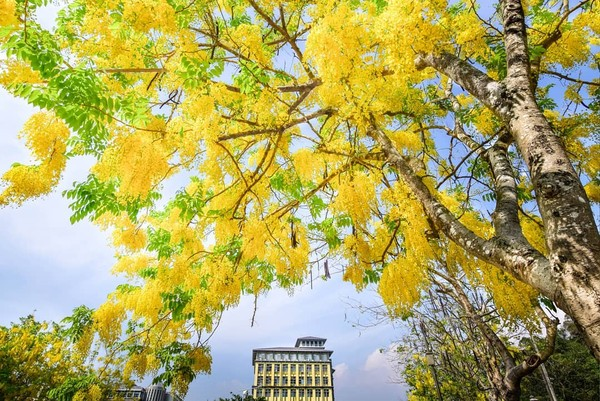

你為何該加入生物化學系?
不可避免的，隨著文明發展，藥物與糧食需求都與對生物本身的理解高度相關。
當有辦法對於基因,細胞構成,生物的種群,生長有著進一步的理解。才能滿足帶領當今人類走向幸福社會的需要。
嘉義大學的優勢
在正規的國立大學教育體系中，山明水秀的嘉義大學是個適合專注學習與研究的好地方。

就業方向
1. 公職人員
2. 生技研究員
3. 國高中生物老師
4. 生技公司技術研發員
5. 動物園管理技師
6. 本系設有環境教育學程，領取證書後，可從事環境教育相關領域人員。
7. 生態旅遊
8. 其他
歡迎您的加入
國立嘉義大學係於民國89年2月1日，由原國立嘉義師範學院及原國立嘉義技術學院兩校整合而成。 學校歷史源遠流長，發展與成長的過程與百年來臺灣經濟、社會、教育的需要與變遷息息相關，脈脈相連。